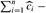
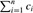

|
|
< Day Day Up > |
|
In the accounting method of amortized analysis, we assign differing charges to different operations, with some operations charged more or less than they actually cost. The amount we charge an operation is called its amortized cost. When an operation's amortized cost exceeds its actual cost, the difference is assigned to specific objects in the data structure as credit. Credit can be used later on to help pay for operations whose amortized cost is less than their actual cost. Thus, one can view the amortized cost of an operation as being split between its actual cost and credit that is either deposited or used up. This method is very different from aggregate analysis, in which all operations have the same amortized cost.
One must choose the amortized costs of operations carefully. If we want analysis with amortized costs to show that in the worst case the average cost per operation is small, the total amortized cost of a sequence of operations must be an upper bound on the total actual cost of the sequence. Moreover, as in aggregate analysis, this relationship must hold for all sequences of operations. If we denote the actual cost of the ith operation by ci and the amortized cost of the ith operation by  , we require
, we require
for all sequences of n operations. The total credit stored in the data structure is the difference between the total amortized cost and the total actual cost, or  . By inequality (17.1), the total credit associated with the data structure must be nonnegative at all times. If the total credit were ever allowed to become negative (the result of undercharging early operations with the promise of repaying the account later on), then the total amortized costs incurred at that time would be below the total actual costs incurred; for the sequence of operations up to that time, the total amortized cost would not be an upper bound on the total actual cost. Thus, we must take care that the total credit in the data structure never becomes negative.
To illustrate the accounting method of amortized analysis, let us return to the stack example. Recall that the actual costs of the operations were
|
PUSH |
1, |
|
POP |
1, |
|
MULTIPOP |
min(k, s) , |
where k is the argument supplied to MULTIPOP and s is the stack size when it is called. Let us assign the following amortized costs:
|
PUSH |
2, |
|
POP |
0, |
|
MULTIPOP |
0. |
Note that the amortized cost of MULTIPOP is a constant (0), whereas the actual cost is variable. Here, all three amortized costs are O(1), although in general the amortized costs of the operations under consideration may differ asymptotically.
We shall now show that we can pay for any sequence of stack operations by charging the amortized costs. Suppose we use a dollar bill to represent each unit of cost. We start with an empty stack. Recall the analogy of Section 10.1 between the stack data structure and a stack of plates in a cafeteria. When we push a plate on the stack, we use 1 dollar to pay the actual cost of the push and are left with a credit of 1 dollar (out of the 2 dollars charged), which we put on top of the plate. At any point in time, every plate on the stack has a dollar of credit on it.
The dollar stored on the plate is prepayment for the cost of popping it from the stack. When we execute a POP operation, we charge the operation nothing and pay its actual cost using the credit stored in the stack. To pop a plate, we take the dollar of credit off the plate and use it to pay the actual cost of the operation. Thus, by charging the PUSH operation a little bit more, we needn't charge the POP operation anything.
Moreover, we needn't charge MULTIPOP operations anything either. To pop the first plate, we take the dollar of credit off the plate and use it to pay the actual cost of a POP operation. To pop a second plate, we again have a dollar of credit on the plate to pay for the POP operation, and so on. Thus, we have always charged enough up front to pay for MULTIPOP operations. In other words, since each plate on the stack has 1 dollar of credit on it, and the stack always has a nonnegative number of plates, we have ensured that the amount of credit is always nonnegative. Thus, for any sequence of n PUSH, POP, and MULTIPOP operations, the total amortized cost is an upper bound on the total actual cost. Since the total amortized cost is O(n), so is the total actual cost.
As another illustration of the accounting method, we analyze the INCREMENT operation on a binary counter that starts at zero. As we observed earlier, the running time of this operation is proportional to the number of bits flipped, which we shall use as our cost for this example. Let us once again use a dollar bill to represent each unit of cost (the flipping of a bit in this example).
For the amortized analysis, let us charge an amortized cost of 2 dollars to set a bit to 1. When a bit is set, we use 1 dollar (out of the 2 dollars charged) to pay for the actual setting of the bit, and we place the other dollar on the bit as credit to be used later when we flip the bit back to 0. At any point in time, every 1 in the counter has a dollar of credit on it, and thus we needn't charge anything to reset a bit to 0; we just pay for the reset with the dollar bill on the bit.
The amortized cost of INCREMENT can now be determined. The cost of resetting the bits within the while loop is paid for by the dollars on the bits that are reset. At most one bit is set, in line 6 of INCREMENT, and therefore the amortized cost of an INCREMENT operation is at most 2 dollars. The number of 1's in the counter is never negative, and thus the amount of credit is always nonnegative. Thus, for n INCREMENT operations, the total amortized cost is O(n), which bounds the total actual cost.
A sequence of stack operations is performed on a stack whose size never exceeds k. After every k operations, a copy of the entire stack is made for backup purposes. Show that the cost of n stack operations, including copying the stack, is O(n) by assigning suitable amortized costs to the various stack operations.
Suppose we wish not only to increment a counter but also to reset it to zero (i.e., make all bits in it 0). Show how to implement a counter as an array of bits so that any sequence of n INCREMENT and RESET operations takes time O(n) on an initially zero counter. (Hint: Keep a pointer to the high-order 1.)
|
|
< Day Day Up > |
|